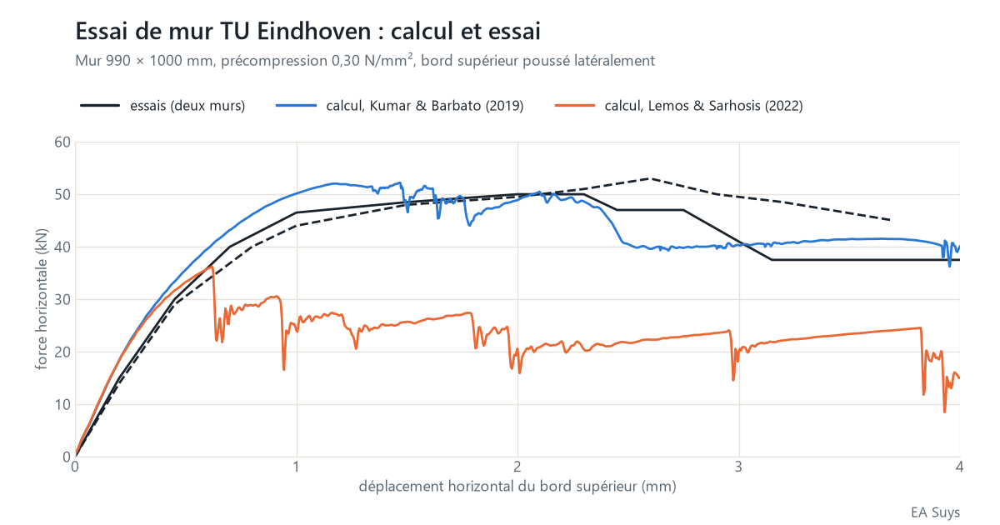
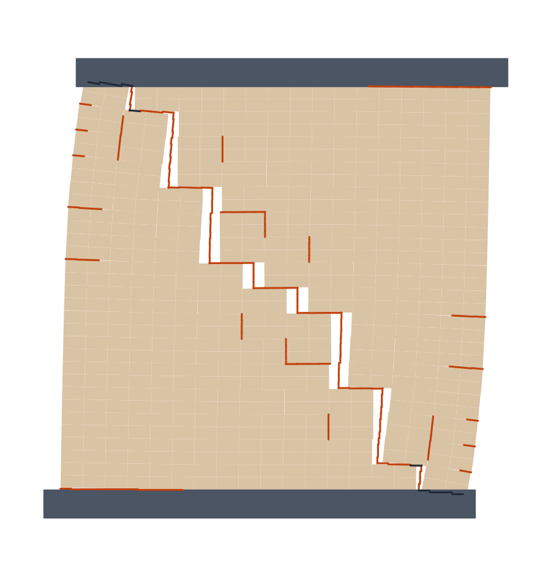

Que peut encore supporter un vieux mur en briques ? Calculé brique par brique
Une nouvelle ouverture dans un mur porteur, des fissures après un tassement, un mur ancien chargé autrement après une transformation : dans les bâtiments existants, la même question revient chaque fois. Pour les cas courants, les règles de l'Eurocode 6 suffisent. Pour les cas particuliers, nous calculons le mur tel qu'il a été construit : brique par brique, joint par joint.
Brique par brique
Dans notre modèle de calcul, chaque brique est un bloc qui se déforme, et chaque joint une interface qui peut s'ouvrir, glisser ou s'écraser. Chaque joint reçoit une résistance à la traction, une cohésion, un angle de frottement et une énergie de rupture : l'énergie nécessaire pour fissurer complètement le joint. Une fissure peut aussi traverser les briques.
Le schéma de fissuration découle ainsi du calcul lui-même. Nous voyons non seulement ce que le mur peut porter, mais aussi comment il se rompt : où les fissures apparaissent, comment elles progressent et ce qu'il reste après la première fissure.
Le test : un essai de mur à la TU Eindhoven
Un modèle de calcul doit d'abord faire ses preuves. À l'Université technique d'Eindhoven, des murs en briques d'environ 1 mètre sur 1 ont été testés (Vermeltfoort & Raijmakers, 1993). Chaque mur a d'abord été comprimé à 0,30 N/mm². Le bord supérieur a ensuite été poussé latéralement, tout en restant à la même hauteur. Ces essais sont une référence classique pour les modèles de calcul de la maçonnerie.
Avec les données de matériaux publiées pour ces murs (Kumar & Barbato, 2019), nous obtenons :
- Force horizontale maximale : 52 kN dans le calcul, 50 et 53 kN dans les deux essais.
- Après le maximum : la force du calcul descend à environ 40 kN pour 4 mm de déplacement. Les deux essais se terminent entre 37 et 45 kN.
- Mode de rupture : une fissure diagonale en escalier à travers les joints et un écrasement dans les angles, comme dans les essais.
- Un résultat stable : trois calculs avec une petite dispersion aléatoire de la résistance des joints donnent la même force maximale, à moins de 1 % près.


Les données de matériaux font la différence
Une deuxième série de données de matériaux a été publiée pour les mêmes murs (Lemos & Sarhosis, 2022), avec une résistance à la traction et une cohésion des joints plus faibles. Avec ces données, le même modèle donne environ 36 kN : 30 % de moins que les essais. Le comportement après le maximum dépend aussi d'une hypothèse : la manière dont la maçonnerie s'écrase dans les angles.
Le modèle n'est donc fiable que si les données sur le mortier et les briques le sont. Pour un bâtiment existant, nous calculons avec une borne inférieure et une borne supérieure, ou nous faisons réaliser des essais sur le mortier et les briques lorsque la réponse en dépend.
Qu'est-ce que cela signifie pour votre projet ?
- Une nouvelle ouverture dans un mur porteur : le reste du mur peut-il encore reprendre les charges et les efforts du vent ?
- Des fissures dans la maçonnerie : quel mouvement explique le schéma de fissuration ? Avec les mesures satellitaires des mouvements du sol, nous voyons si ce mouvement est encore actif.
- Patrimoine et réaffectation : des murs anciens chargés autrement par une nouvelle fonction.
Pour les cas courants, nous calculons selon l'Eurocode 6. Nous utilisons ce modèle là où ces règles ne suffisent pas. Une question sur un bâtiment précis ? Écrivez à info@easuys.be.
Sources
- Vermeltfoort, A.T. & Raijmakers, T.M.J. (1993). Deformation controlled tests in masonry shear walls, parties 1 et 2. Université technique d'Eindhoven.
- Kumar, N. & Barbato, M. (2019). New constitutive model for interface elements in finite-element modeling of masonry. Journal of Engineering Mechanics 145(5). doi:10.1061/(ASCE)EM.1943-7889.0001592
- Lemos, J.V. & Sarhosis, V. (2022). Discrete element bonded-block models for detailed analysis of masonry. Infrastructures 7(3), 31. doi:10.3390/infrastructures7030031
- Rainone, Tateo, Casolo & Uva (2023). About the use of concrete damage plasticity for modeling masonry post-elastic behavior. Buildings 13(8), 1915 (CC BY 4.0). doi:10.3390/buildings13081915